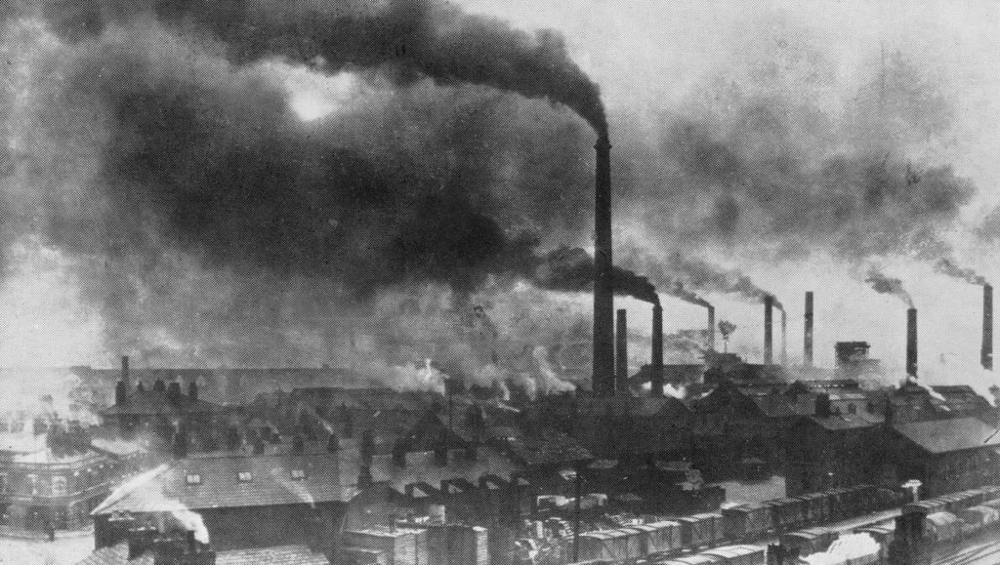

Prima della rivoluzione industriale le attività economiche dominanti erano l'agricoltura, l'allevamento del bestiame, l'artigianato e il commercio. tutte queste attività le facevano gli uomini, donne e animali (per esempio i buoi e i cavalli che trainavano i carri e gli aratri);alcune volte si sfruttava l'energia eolica, del vento, e quella idrica, dei corsi d'acqua (per esempio per azionare i mulini). Usavano anche I combustibili per riscaldarsi e per cuocere i cibi,in particolare la legna da ardere e il carbone di legna (cioè la carbonella, ottenuta dai boscaioli facendo bruciare lentamente e in condizioni controllate una catasta di legna ricoperta da uno strato di terra battuta). Ma nessuna di queste energie era davvero adatta a far funzionare le macchine a vapore. Fu dunque necessario ricorrere a una nuova fonte energetica, rappresentata dal carbon fossile. Ma l'impiego del carbon fossile come combustibile provocò dei problemi di inquinamento. Le ciminiere delle fabbriche rilasciavano nell'aria i gas tossici derivanti dalla combustione, e le città industriali inglesi iniziarono a essere coperte da una tipica sporcizia nerastra di fuliggine. Inoltre, tutte le scorie delle varie lavorazioni venivano smaltite nei fiumi, inquinando le acque. Dall'inizio dell'età dei combustibili fossili, le società umane furono esposte all'inquinamento molto più che in passato e con conseguenze assai più gravi.
1
deriva dal verbo latino che significa "sporcare", "guastare" e nell'uso corrente la parola è usata per indicare i danni che gli esseri umani possono causare all'ambiente, immettendo sostanze dannose nell'aria (inquinamento atmosferico) o nell'acqua dei fiumi e del mare (inquinamento idrico).